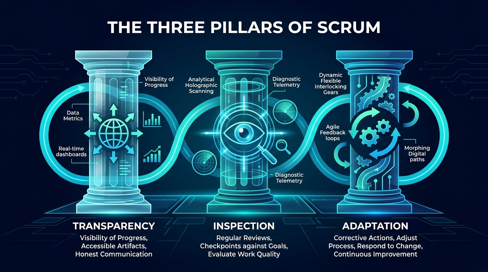

SCRUM: Revisión General Paso a Paso
Un recorrido integral y pedagógico por los fundamentos, roles, eventos, artefactos y prácticas de ingeniería en Scrum, estructurado con especial énfasis en cómo la Calidad de Software (V&V) se construye de forma continua en cada ciclo iterativo.
¿Qué es Scrum?
Marco de trabajo ágil adaptativo y desarrollo iterativo e incremental
Scrum es un marco de trabajo ágil (framework) liviano que ayuda a las personas, equipos y organizaciones a generar valor a través de soluciones adaptables para problemas complejos, mediante ciclos cortos de trabajo llamados Sprints.
En lugar de desarrollar un sistema monolítico durante seis meses y esperar hasta el final para entregarlo y verificar si funciona (modelo tradicional en cascada), Scrum propone trabajar en períodos cortos, entregar incrementos utilizables y funcionales, e incorporar retroalimentación de manera continua.

Ejemplo Práctico en Aula: Sistema de Gestión Académica Universitaria
Imaginemos que una universidad necesita un nuevo sistema de gestión académica integral. En lugar de pasar 6 meses en diseño antes de codificar, el equipo organiza el proyecto en entregas quincenales:
| Sprint | Funcionalidad Central | Incremento Funcional Utilizable |
|---|---|---|
| Sprint 1 | Inicio de sesión y autenticación segura | Módulo con validación de credenciales, roles y hash en base de datos. |
| Sprint 2 | Gestión de estudiantes | CRUD completo de perfiles de alumnos y ficha académica personal. |
| Sprint 3 | Gestión de docentes | Registro de profesores, asignación horaria y departamentos académicos. |
| Sprint 4 | Matrículas en asignaturas | Inscripción en línea con validación estricta de prerrequisitos y cupos. |
| Sprint 5 | Calificaciones y evaluaciones | Registro de notas por parciales, ponderaciones y cálculo automático de promedios. |
| Sprint 6 | Reportes y analítica académica | Generación de actas oficiales en PDF y reportes de rendimiento estudiantil. |
¿Dónde entra la Calidad de Software?
¡No esperamos hasta el último Sprint para comprobar si el sistema funciona! La calidad no es una fase tardía de pruebas de choque: se construye, verifica y valida en cada Sprint mediante pruebas unitarias, integración continua, análisis estático y validación de criterios de aceptación antes de dar por terminado cada módulo.
¿Cuáles son los Pilares de Scrum?
El control empírico de procesos: Transparencia, Inspección y Adaptación
Scrum se fundamenta en el empirismo (el conocimiento proviene de la experiencia y la toma de decisiones basada en lo observado) y el pensamiento Lean (reducir el desperdicio y enfocarse en lo esencial). El empirismo se sostiene sobre tres pilares fundamentales:

1. Transparencia
Los procesos y el trabajo emergente deben ser visibles para quienes realizan el trabajo y para quienes lo reciben.
2. Inspección
Los artefactos y el progreso hacia los objetivos deben inspeccionarse con frecuencia y diligencia para detectar desviaciones o problemas potencialmente indeseables.
3. Adaptación
Si un aspecto de un proceso se desvía fuera de los límites aceptables o si el producto resultante es inaceptable, el proceso o los materiales deben ajustarse de inmediato.
Idea Clave para Transmitir en el Aula
Scrum no significa programar más rápido o hacer horas extras. Significa aprender tempranamente, inspeccionar el código y el proceso con rigor, y adaptarse de forma continua para entregar verdadero valor con alta calidad verificable.
Los Cinco Valores de Scrum
El código ético y actitudinal que da vida a los pilares empíricos
El uso exitoso de Scrum depende de que las personas se vuelvan más competentes en vivir estos cinco valores. Cuando estos valores son encarnados por el Scrum Team, los pilares de transparencia, inspección y adaptación cobran vida y generan confianza mutua.
| Valor | ¿Qué significa en la práctica? | Ejemplo en el Proyecto Académico |
|---|---|---|
| Compromiso (Commitment) | Las personas se comprometen personalmente a alcanzar los objetivos del Scrum Team y apoyarse mutuamente. | Comprometerse a entregar el incremento del Sprint cumpliendo a cabalidad con la Definition of Done (DoD). |
| Foco (Focus) | El foco principal está en el trabajo del Sprint para avanzar lo máximo posible hacia los objetivos planteados. | Concentrarse en finalizar las validaciones del módulo de matrículas sin distraerse con nuevas ideas secundarias. |
| Apertura (Openness) | El Scrum Team y sus partes interesadas son abiertos respecto al trabajo y a los desafíos que enfrentan. | Comunicar en la reunión diaria que un endpoint de la base de datos PostgreSQL está fallando bajo carga. |
| Respeto (Respect) | Los miembros del equipo se respetan entre sí como personas capaces e independientes con diferentes habilidades. | Escuchar las observaciones del especialista en QA cuando advierte riesgos de seguridad en el formulario de login. |
| Coraje (Courage) | Tener la valentía de hacer lo correcto, decir la verdad técnica y trabajar en los problemas difíciles. | Reconocer ante el Product Owner que una arquitectura no escala y necesita refactorización antes de pasar a producción. |
¿Quiénes Participan en Scrum? (El Scrum Team)
Un equipo multidisciplinario, autoorganizado y sin jerarquías internas
La unidad fundamental de Scrum es un pequeño equipo de personas: el Scrum Team. Dentro de un Scrum Team no hay jerarquías ni subequipos; es una unidad cohesiva de profesionales enfocados en un objetivo a la vez: el Product Goal. Está conformado por tres responsabilidades específicas:

A. Product Owner (PO)
Es la persona responsable de maximizar el valor del producto resultante del trabajo del Scrum Team y de gestionar eficazmente el Product Backlog.
- Desarrolla y comunica explícitamente el Product Goal.
- Crea, detalla y ordena los ítems del Product Backlog por prioridad.
- Asegura que el backlog sea transparente, visible y claro para todos.
B. Scrum Master (SM)
Es responsable de establecer Scrum tal como se define en la Guía de Scrum y de mejorar la efectividad y madurez del Scrum Team como líder facilitador.
- Facilita la remoción de impedimentos que frenan el avance del equipo.
- Asegura que todos los eventos de Scrum se realicen de forma positiva y dentro del timebox.
- Guía y entrena al equipo en autogestión y multidisciplinariedad.
C. Developers (Desarrolladores)
Son las personas del Scrum Team que se comprometen a crear cualquier aspecto de un Incremento utilizable en cada Sprint.
- Crean el plan para el Sprint (el Sprint Backlog).
- Inculcan calidad adhiriéndose estrictamente a la Definition of Done.
- Adaptan su plan cada día hacia el Sprint Goal.
Diferencia Crucial para Estudiantes de Software
Scrum no establece cargos tradicionales (jefe de proyecto, analista de sistemas, programador junior, tester asignado). El Scrum Team es un equipo con responsabilidad colectiva sobre el producto, sin silos departamentales ni relaciones de subordinación interna: el Scrum Master no es el jefe de los programadores.
¿Cómo Funciona un Sprint?
El ciclo fundamental de iteración que da ritmo al desarrollo
El Sprint es el corazón palpitante de Scrum. Es un período de duración fija (timebox) de un mes o menos para crear consistencia. Tan pronto como concluye un Sprint, comienza inmediatamente el siguiente. En la industria, la duración más común es de 2 semanas.
Sprint Planning (Planificación)
Se inicia el Sprint definiendo qué valor se entregará, seleccionando los ítems prioritarios del Product Backlog y trazando el plan de tareas técnicas.
Desarrollo, Diseño y Construcción
Los Developers transforman los requisitos en código fuente probado, integrado y desplegable, aplicando buenas prácticas de desarrollo.
Daily Scrum (Sincronización Diaria)
Diariamente (15 minutos), los Developers inspeccionan el progreso hacia el Sprint Goal y adaptan el Sprint Backlog según sea necesario.
Sprint Review (Inspección del Producto)
El Scrum Team presenta el incremento terminado a los clientes y partes interesadas para recibir feedback directo sobre el sistema real.
Sprint Retrospective (Mejora del Proceso)
El equipo inspecciona cómo fue su trabajo en cuanto a personas, relaciones, procesos y herramientas, acordando mejoras para el próximo ciclo.
Aclaración Pedagógica
Estos eventos no son etapas secuenciales aisladas que se ejecutan una sola vez en el proyecto: son ceremonias rítmicas que se repiten con exactitud en cada Sprint durante toda la vida del producto.
Los Cinco Eventos de Scrum
Puntos formales de inspección y adaptación diseñados para eliminar reuniones innecesarias
1. El Sprint
Contenedor de todos los demás eventos. Tiene duración fija (máximo 1 mes). Durante su ejecución:
- No se realizan cambios que pongan en peligro el Sprint Goal.
- La calidad no disminuye bajo ninguna circunstancia.
- El Product Backlog se refina según sea necesario.
2. Sprint Planning
Reunión donde el Scrum Team colabora para responder a tres temas fundamentales:
1. ¿Por qué es valioso? → Se pacta el Sprint Goal.
2. ¿Qué se puede hacer? → Se seleccionan historias del Product Backlog.
3. ¿Cómo se hará? → Los Developers planifican tareas técnicas.
3. Daily Scrum
Evento de 15 minutos para los Developers. Inspecciona el avance diario hacia el Sprint Goal y adapta el trabajo de las siguientes 24 horas.
Nota didáctica: Las 3 preguntas clásicas (¿qué hice ayer?, ¿qué haré hoy?, ¿qué bloqueos tengo?) son una técnica opcional, no obligatoria de la Guía oficial.
4. Sprint Review
Sesión de trabajo colaborativo de hasta 4 horas (en Sprints de 1 mes) donde el Scrum Team y los Stakeholders revisan lo construido y adaptan el Product Backlog.
5. Sprint Retrospective
Evento para planificar formas de aumentar la calidad y la efectividad inspeccionando individuos, interacciones, procesos, herramientas y la Definition of Done.
Diferencia Esencial: Sprint Review vs. Sprint Retrospective
Sprint Review: Enfocado en el QUÉ (el producto, las funcionalidades, el valor de negocio y el feedback del usuario).
Sprint Retrospective: Enfocado en el CÓMO (las prácticas de ingeniería, la calidad del código, la comunicación interna y la mejora del proceso).
¿Qué son los Artefactos de Scrum y sus Compromisos?
La transparencia del trabajo y las promesas de calidad asociadas
Los artefactos de Scrum representan trabajo o valor. Están diseñados para maximizar la transparencia de la información clave. Cada uno de los tres artefactos contiene un compromiso formal para garantizar que proporcione información que refuerce el empirismo:
Product Backlog
Lista ordenada y emergente de todo lo que se sabe que es necesario en el producto. Es la única fuente de trabajo para el Scrum Team.
Describe el estado futuro del producto que sirve como objetivo a largo plazo hacia el cual el equipo planifica.
Sprint Backlog
El conjunto de elementos del Product Backlog seleccionados para el Sprint, más el plan detallado para entregar el Incremento.
El único objetivo del Sprint que crea coherencia y enfoque, brindando flexibilidad respecto al trabajo específico necesario para lograrlo.
Increment (Incremento)
Un peldaño concreto hacia el Product Goal. Cada incremento se suma a todos los incrementos anteriores y está debidamente probado y utilizable.
Descripción formal del estado del Incremento cuando cumple las medidas de calidad requeridas para el producto.
| Artefacto | Pregunta Clave que Responde | Compromiso Obligatorio |
|---|---|---|
| Product Backlog | ¿Qué necesita el producto para maximizar su valor a largo plazo? | Product Goal |
| Sprint Backlog | ¿Qué nos comprometemos a construir en este Sprint y cómo lo haremos técnicamente? | Sprint Goal |
| Increment | ¿Qué hemos construido que ya funciona, está integrado y cumple la calidad esperada? | Definition of Done (DoD) |
¿Qué es el Product Backlog y cómo se organiza?
Gestión dinámica, priorización y refinamiento hacia historias de usuario
El Product Backlog nunca está completo. El desarrollo más temprano refleja los requerimientos inicialmente conocidos y mejor entendidos. Evoluciona a medida que el producto y el entorno en el que se utiliza cambian. Es dinámico: constantemente cambia para identificar lo que el producto necesita para ser apropiado, competitivo y útil.
| ID | Elemento / Funcionalidad del Sistema Académico | Prioridad de Negocio | Estimación Relativa |
|---|---|---|---|
PB01 |
Inicio de sesión y autenticación con validación de roles | ALTA | 3 Puntos |
PB02 |
Registrar y actualizar expedientes de estudiantes | ALTA | 5 Puntos |
PB03 |
Consultar asignaturas disponibles y malla curricular | ALTA | 3 Puntos |
PB04 |
Realizar matrículas con validación de prerrequisitos | ALTA | 8 Puntos |
PB05 |
Consultar calificaciones y récord académico por ciclo | MEDIA | 5 Puntos |
PB06 |
Generar reportes estadísticos y actas en formato PDF | BAJA | 8 Puntos |
El Refinamiento del Product Backlog (Refinement / Grooming)
Es el acto de descomponer y definir aún más los elementos del Product Backlog en partes más pequeñas y precisas. Es una actividad continua en la que se agregan detalles como una descripción, orden y tamaño.
Ejemplo práctico: La necesidad "Gestionar matrículas" es una épica demasiado grande para un Sprint. Se refina en historias atómicas:
- 1. Consultar asignaturas con cupos disponibles.
- 2. Validar prerrequisitos aprobados en ciclos previos.
- 3. Confirmar asignaturas seleccionadas e imprimir comprobante digital.
¿Qué Relación tiene Scrum con la Calidad de Software?
Núcleo temático para Verificación y Validación de Software (V&V)
Scrum no garantiza automáticamente que un software esté bien programado ni libre de defectos. Lo que Scrum provee es un marco transparente de inspección y adaptación continuas. La verdadera calidad depende de que los desarrolladores y evaluadores incorporen prácticas de ingeniería rigurosas (TDD, revisiones de pares, integración continua, pruebas no funcionales de seguridad y rendimiento).
| Actividad o Evento Scrum | Impacto Directo en la Calidad (V&V) |
|---|---|
| Sprint Planning | Planificar no solo el código, sino la estrategia de pruebas, los criterios de aceptación y los entornos de ejecución necesarios. |
| Daily Scrum | Identificar tempranamente defectos bloqueantes, fallos en la integración continua o problemas con los servidores de pruebas. |
| Desarrollo Diario | Aplicar estándares de codificación limpia, pruebas unitarias automatizadas y revisiones estáticas de código (Clean Code / SonarQube). |
| Sprint Review | Validar con los usuarios reales que el sistema resuelva la necesidad funcional correcta sin inconsistencias de negocio. |
| Sprint Retrospective | Analizar la deuda técnica acumulada, la tasa de defectos escapados a producción y mejorar los pipelines de CI/CD. |
| Definition of Done | Establecer las barreras innegociables de control de calidad que todo incremento debe superar para considerarse entregable. |
Ejemplo Real de Definition of Done (DoD) — Módulo de Matrículas
Para que una historia de usuario se considere "Terminada", debe cumplir obligatoriamente todas estas condiciones:
Diferencia Fundamental: Criterios de Aceptación vs. Definition of Done
• Criterios de Aceptación (AC): Son condiciones específicas y particulares de una historia de usuario (por ejemplo: "El estudiante no puede matricularse si debe aranceles").
• Definition of Done (DoD): Es el estándar global y transversal de calidad que aplica a todos los elementos del incremento (pruebas automatizadas, documentación, linters, seguridad).
¿Qué Herramientas se Utilizan para Trabajar con Scrum?
Gestión visual del flujo de trabajo en herramientas digitales y físicas
Scrum no impone ninguna herramienta de software en particular; el marco puede ejecutarse exitosamente con una pizarra blanca y notas adhesivas. Sin embargo, en la industria de TI moderna se emplean herramientas avanzadas de gestión colaborativa:
Jira Software (Atlassian)
El estándar industrial más extendido para gestionar Product Backlogs, planificar Sprints, estimar en Story Points, graficar diagramas de quemado (Burndown Charts) y trazar incidencias.
Trello
Herramienta ágil y visual basada en tarjetas y columnas ideal para proyectos medianos, equipos ágiles introductorios y dinámicas pedagógicas de aula.
Azure DevOps Boards
Plataforma integral de Microsoft que conecta tableros Scrum con repositorios Git, pipelines de integración continua (CI/CD) y planes de pruebas automatizadas.
Simulador de Tablero Scrum (Sprint Board)
Recordatorio Fundamental para la Clase
Tener un tablero con columnas Kanban ayuda enormemente a visualizar el flujo, pero no convierte mágicamente a un equipo en Scrum si no existen los roles, los valores, el empirismo ni los compromisos con la calidad.
¿Cómo Llegamos a las Historias de Usuario?
El puente fundamental entre la necesidad del usuario y la prueba de calidad
Imaginemos la situación en el sistema académico: el Product Owner coloca en el Product Backlog: "Implementar el módulo de matrículas". ¿Cómo sabe el equipo técnico exactamente qué necesita el estudiante y cómo verificarlo?
Aquí surgen las Historias de Usuario (User Stories): descripciones cortas y sencillas de una funcionalidad contada desde la perspectiva de la persona que desea esa capacidad.
Criterios de Aceptación Verificables (QA):
Una historia no está completa sin sus condiciones de satisfacción:
- ✓ Criterio 1: El estudiante debe haber iniciado sesión con credenciales válidas y tener su matrícula financiera al día.
- ✓ Criterio 2: La plataforma debe mostrar únicamente las asignaturas cuyos prerrequisitos estén aprobados en el histórico.
- ✓ Criterio 3: Si una materia no tiene cupos disponibles, el sistema no debe permitir su selección y debe sugerir horarios alternos.
- ✓ Criterio 4: Al confirmar, el sistema debe registrar la transacción de forma atómica en PostgreSQL y enviar un correo con el comprobante PDF.
La Conexión con Verificación y Validación
Cada Criterio de Aceptación se convierte de forma directa en uno o varios Casos de Prueba (Test Cases). Si todos los casos de prueba pasan y se cumple la Definition of Done, la historia está válidamente terminada.
Conceptos que tus Estudiantes Deben Diferenciar
Glosario conceptual para evitar confusiones de terminología técnica
| Término | Definición y Significado Preciso |
|---|---|
| Épica | Una necesidad funcional grande y de alto nivel que excede el tiempo de un solo Sprint y que debe descomponerse en múltiples historias de usuario. |
| Historia de Usuario | Requerimiento funcional expresado desde la óptica y necesidad de valor del usuario final con criterios de aceptación asociados. |
| Tarea Técnica | Unidad elemental de trabajo técnico (crear tabla, diseñar mock, configurar API) necesaria para construir una historia de usuario. |
| Criterio de Aceptación | Condición específica y observable que define cuándo una historia de usuario funciona exactamente como el cliente espera. |
| Sprint Goal | Objetivo primordial convenido para el Sprint actual que guía las decisiones técnicas de los Developers. |
| Product Goal | Objetivo estratégico de largo plazo hacia el cual el producto evoluciona en sucesivos Sprints. |
| Definition of Done (DoD) | Conjunto de estándares transversales de calidad técnica y organizativa que garantizan que el incremento está listo para uso productivo. |
Clarificación Oficial
Scrum no exige formalmente el uso de Épicas ni de Puntos de Historia. Son técnicas complementarias de la industria que han demostrado ser muy eficaces cuando se aplican con buen criterio.
¿Qué Errores Debes Evitar al Enseñar Scrum?
Antipatrones comunes que distorsionan el marco ágil en la academia y la industria
❌ Error 1: "Scrum es cascada pero con reuniones cortas"
En Scrum no se hace diseño un Sprint, código en el siguiente y pruebas al final. En cada Sprint se analiza, diseña, programa y prueba.
❌ Error 2: "El Scrum Master es el jefe del proyecto"
El Scrum Master no asigna tareas con un cronograma ni sanciona; es un líder que remueve impedimentos y enseña el marco de trabajo.
❌ Error 3: "El Daily es para rendir cuentas al jefe"
El Daily Scrum es una sincronización entre los propios Developers para adaptar su plan hacia el objetivo, no un reporte de horas.
❌ Error 4: "En Scrum no se documenta nada"
El Manifiesto Ágil valora el software funcionando sobre la documentación exhaustiva, pero la documentación técnica de calidad es vital.
❌ Error 5: "Si compila, ya está terminado"
Compilar es el paso cero. Si no tiene pruebas automatizadas, revisión de pares ni validación de criterios, no cumple la DoD.
❌ Error 6: "Scrum garantiza software sin errores por sí solo"
Scrum solo hace visible la ineficiencia y los problemas de calidad. La excelencia técnica la aportan los estándares y pruebas del equipo.
Propuesta Didáctica: Plan de Clase de 90 Minutos
Estructura temporizada para impartir la sesión en la asignatura de Calidad de Software
| Bloque | Módulo Temático | Objetivo Pedagógico y Contenido Clave | Tiempo |
|---|---|---|---|
| 1 | Introducción a Scrum | Qué es, por qué surge frente a la cascada y análisis de los 3 pilares del empirismo. | 10 min |
| 2 | Roles y Responsabilidades | El Scrum Team: Product Owner, Scrum Master y Developers. Desmitificar jerarquías. | 15 min |
| 3 | Eventos de Scrum | Sprint, Planning, Daily, Review y Retrospective con ejemplos reales. | 20 min |
| 4 | Artefactos & Compromisos | Product Backlog, Sprint Backlog e Incremento asociados a sus respectivos compromisos. | 15 min |
| 5 | Scrum y Calidad de Software | La Definition of Done (DoD), pruebas en el Sprint y prevención de defectos. | 15 min |
| 6 | Dinámica de Integración | Simulación rápida por equipos definiendo roles y criterios de un sistema académico. | 15 min |
Actividad Práctica: "Construyamos un Sistema Académico con Scrum"
Taller dinámico sin computadoras para afianzar roles, backlogs y criterios de calidad
Dinámica: Se divide la clase en equipos de 4 o 5 estudiantes. Cada grupo representará a una célula ágil encargada de desarrollar el módulo de matrículas de la universidad.
1. Asignación de Roles
Cada equipo designa internamente a 1 Product Owner, 1 Scrum Master y 2 o 3 Developers (incluyendo un rol con enfoque en QA).
2. Crear el Product Backlog
Escriben en notas adhesivas 5 necesidades esenciales del sistema y las ordenan verticalmente por prioridad de valor.
3. Definir el Sprint Goal
Seleccionan qué historias abordarán en su primer Sprint de dos semanas y redactan una frase que resuma el objetivo.
4. Establecer su DoD
Definen al menos 5 condiciones obligatorias de calidad antes de que cualquier funcionalidad sea aceptada como terminada.
Pregunta Provocadora para el Cierre de la Dinámica
"¿Entregarían ustedes al rector de la universidad una funcionalidad que visualmente se ve bonita y funciona en la máquina del programador, pero que no ha sido probada con carga de 5,000 estudiantes simultáneos?"
Esta pregunta conecta de forma instantánea el valor ético y técnico de la Verificación y Validación en Scrum.
Orden Recomendado para Continuar la Asignatura
Secuencia pedagógica modular para las siguientes semanas de clase
Revisión General de Scrum (Esta Clase)
Comprensión sólida de los roles, eventos, pilares, valores y artefactos.
Historias de Usuario y Criterios INVEST
Estructura, técnicas de redacción y características de calidad: Independiente, Negociable, Valiosa, Estimable, Pequeña y Comprobable.
Criterios de Aceptación y BDD
Cómo formular condiciones verificables mediante ejemplos claros (Dado... Cuando... Entonces...).
Estimación y Priorización Ágil
Story Points, Planning Poker y técnicas como MoSCoW o WSJF para ordenar el Product Backlog.
Pruebas de Aceptación y Automatización
Derivación de casos de prueba formales a partir de las historias y su integración en pipelines de CI/CD.
Materiales de Referencia y Preguntas de Cierre
Fuentes primarias y banco de preguntas para comprobar la comprensión del grupo
Se recomienda a los docentes y estudiantes recurrir siempre a las fuentes formales del marco de trabajo:
- 📖 The Scrum Guide (Guía Oficial de Scrum): Ken Schwaber y Jeff Sutherland. scrumguides.org (disponible en español).
- 🌐 Scrum.org: Centro global de recursos, certificaciones y evaluaciones profesionales de Scrum. scrum.org/resources.
Evaluación Formativa Interactiva en Aula
Utiliza estas preguntas con tus estudiantes para afianzar el conocimiento clave:
Agile Methodology Flow Chart for IT Software Industry
Flujo Metodológico Integral de Scrum y Metodologías Ágiles con desglose y traducción completa al español de cada uno de sus componentes y etapas.

Desglose y Significado en Español de Cada Componente del Diagrama
Key Agile Roles
• Product Owner: Dueño del producto, define la visión del negocio y prioriza las necesidades en el backlog.
• Scrum Master: Facilitador ágil que remueve bloqueos y asegura la adherencia al marco de trabajo.
• Development Team: Equipo multidisciplinario (desarrolladores, testers QA, arquitectos, UX) que construye el software.
• Stakeholders: Clientes, usuarios e interesados de la organización que proporcionan requisitos y retroalimentación.
1. Product Vision & Concept
Visión y Concepto del Producto: Es el punto de partida donde se define la estrategia de negocio, la propuesta de valor y las necesidades clave que el sistema resolverá en el mercado o en la institución.
2. Create Product Backlog
Creación del Product Backlog (Historias de Usuario Priorizadas): Gestionado directamente por el Product Owner. Consiste en documentar y jerarquizar todas las funcionalidades, requisitos no funcionales y mejoras esperadas en el producto.
3. Sprint Planning
Planificación del Sprint: El Scrum Team colabora para seleccionar qué historias de usuario del Product Backlog se abordarán en el ciclo inmediato, definiendo el objetivo del Sprint (Sprint Goal) y el plan de trabajo.
Subprocesos del Corazón Iterativo de Scrum
Tareas técnicas derivadas de las historias de usuario seleccionadas que los desarrolladores planifican para el Sprint actual.
Reunión diaria de 15 minutos de los desarrolladores para evaluar el avance hacia el Sprint Goal, coordinar esfuerzos y detectar bloqueos.
Desarrollar, diseñar y compilar el incremento de software, incluyendo la resolución continua de defectos (Bug Fixes).
Probar y validar con Integración Continua (CI): ejecución de pruebas unitarias, de integración y verificación contra la Definition of Done.
4. Sprint Review
Demostración del Incremento Potencialmente Desplegable (Demo Potentially Shippable Increment): Sesión de demostración ante los Stakeholders y clientes donde se comprueba el valor real entregado y se recopila feedback.
Shippable Increment & Release to Production
Incremento Listo para Producción y Despliegue: El producto terminado y validado se libera a los servidores de producción (Product in Production) para uso real de los usuarios finales.
A. Feedback Loop
Retroalimentación del Usuario en Producción: Los comentarios, métricas de uso y nuevas necesidades de los usuarios reales vuelven al Paso 2 (Product Backlog) para nutrir futuras iteraciones y mantener la adaptabilidad del software.
5. Sprint Retrospective
Retrospectiva del Sprint (Team Improvement): El equipo reflexiona sobre su propio desempeño, comunicación interna, herramientas y prácticas de testing para identificar mejoras concretas, alimentando directamente la siguiente Sprint Planning (Paso 3).